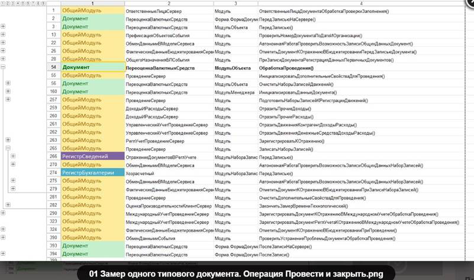
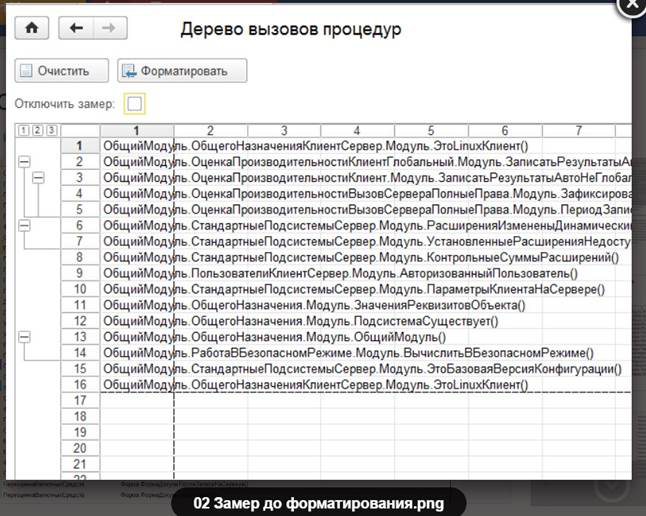
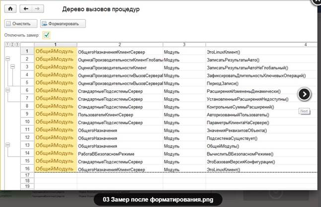
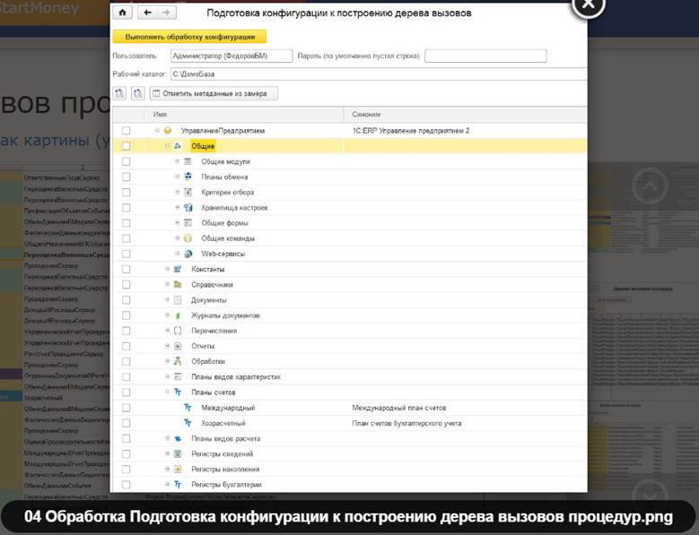
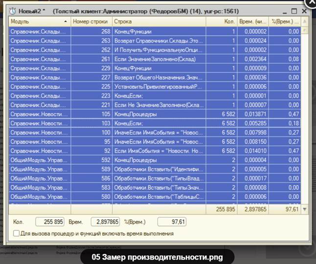
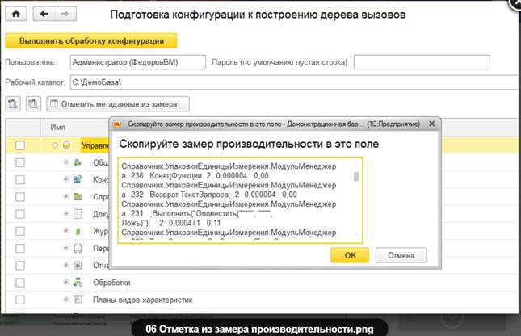
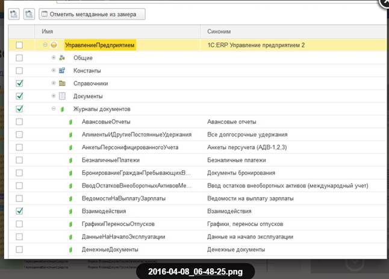
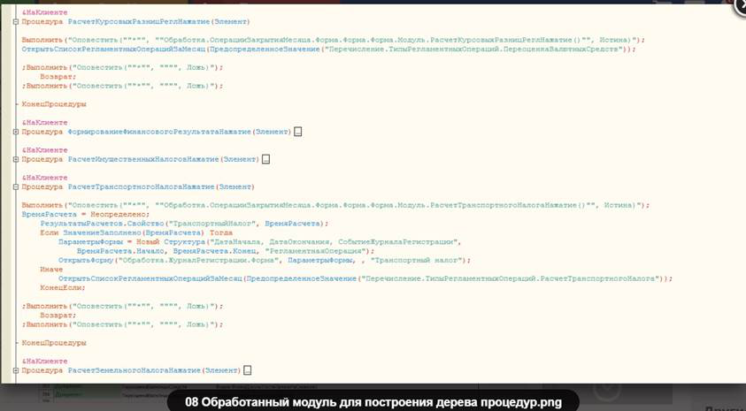

Данная разработка является экспериментальной моделью. Она имеет ряд существенных ограничений, о которых ниже, однако обладает также и некоторой практической ценностью.
Постановка задачи
- Пусть есть некоторая конфигурация, написанная не нами, например типовая.
- Нам необходимо разобраться, как работает некоторая функция системы: какие процедуры вызываются, в какой последовательности, из каких модулей.
- Выполнять исследование с помощью отладчика - очень трудоемко, из-за очень большого количества процедур, модулей и уровня вложенности вызовов.
- При этом мы хотим также зафиксировать результат в удобном для восприятия виде, чтобы можно было возвратиться к нему позднее или поделиться с другими.
- Может также применяться в случаях, когда алгоритм очень объемный и необходимо определить где поставить точку останова, чтобы начать исследование интересующего нас кусочка этого алгоритма
Принцип работы
Выполняется программная обработка модулей исследуемого алгоритма. На входе и выходе каждой процедуры подставляется вызов условного метода. В данном случае условным методом является процедура Оповестить(). Перед запуском алгоритма открывается специальная форма, ловит оповещения и фиксирует в виде табличного документа на этой форме.
Детали доработки
- В общем никаких дополнительных подсистем встраивать в конфигурацию не требуется.
- Т.к. частичная загрузка файлов через метод “Загрузить конфигурацию из файлов” в некоторых случаях отрабатывает с ошибкой, обработка модулей выполняется через “старые” методы конфигурации “Выгрузить файлы конфигурации” и “Загрузить файлы конфигурации”, поэтому необходимо включить возможность изменения для всех обрабатываемых модулей.
Подготовка конфигурации к замеру "Полная"
- Замер необходимо производить в копии базы. Поэтому нужно подготовить копию для замера
- Включить возможность изменения для всех модулей конфигурации
- Закрыть конфигуратор
- Открыть обработку “Подготовка конфигурации к построению дерева вызова процедур”
- проставить все галки
- рабочий каталог можно оставить по умолчанию, обработка создаст в нем свой каталог и поместит в него служебные файлы
- Дождаться, пока обработка :
- Выгрузит модули текущей конфигурации в текстовые файлы
- обработает файлы
- загрузит модули из обработанных файлов
- Войти в конфигурацию и применить изменения (F7)
Подготовка конфигурации к замеру "Быстрая"
Наиболее продолжительной по времени операцией в полном способе является операция 5-b. Чтобы ускорить эту операцию можно использовать ускоренный способ, при котором обрабатываются только те модули, которые мы хотим исследовать
- Выполнить замер производительности для исследуемого алгоритма через стандартную функцию конфигуратора Отладка-Замер производительности
- Выполнить все пункты из полной подготовки к замеру с той лишь разницей, что на шаге 4 установить не все флаги, а только модули, которые есть в замере производительности. Для этого есть специальная кнопка “Отметить из замера”. По этой кнопке откроется текстовое поле, в которое нужно вставить скопированный замер (“ctrl+A”, “ctrl+C”)
Подготовка к замеру демо конфигурации ERP таким способом занимает около 20 минут
- - около 2 минут выгрузка всех модулей конфигурации в текстовые файлы
- - около 2-5 минут обработка файлов (если их много)
- - около 1 минуты загрузка файлов
- - остальное время на копирование, сохранение, запуск
Построение дерева вызовов:
- Подготовить систему к замеру, т.е. выполнить все подготовительные действия, которые не должны попасть в замер
- Открыть обработку Построение дерева вызовов процедур
- Запустить выполнение исследуемого алгоритма
- По окончании выполнения алгоритма перейти в окно обработки, установить галку “Отключить замер” и нажать кнопку Форматировать, чтобы привести замер к более читаемому виду
Ограничения:
- Работает только в режиме толстого клиента файловой версии. Тестировалось на 1С:ERP Управление предприятием 2 (2.1.3.82)
- Разработку не следует использовать на рабочей базе, т.к. это может привести к нежелательным последствиям
- Обработка всех текстов модулей выполняется очень продолжительное время.
- Можно замерять в режиме обычного и управляемого приложения, но использовалось пока только в управляемом
- Обработка для подготовки к замеру реализована только на управляемых формах
- Обязательное требование: качественный читаемый код конфигурации, в котором по названию процедуры можно достаточно точно понять, что она делает
- Длительность выполнения замеряемой операции может увеличиться в разы. Например, если в демо базе проведение выполнялось 5 секунд, то с замером это же проведение может выполняться минуту и больше. Поэтому лучше позаботиться, о том, чтобы лишние процедуры, которые не представляют интереса для исследования, не попали в замер.
Данная разработка является вариацией на тему аналогичных работ:
http://infostart.ru/public/164960/
http://infostart.ru/public/203843/
Содержание архива:
1. Обработка Подготовка конфигурации к построению дерева процедур
2. Обработка Построение дерева процедур







